Volcán de Chocolate
Volcán de Chocolate
¿De donde viene el volcán de chocolate?
El volcán de chocolate o tambien llamado couland de chocolate es un postre de origen francés, patentado en 1981 por el chef Michael Bras en su restaurante de Laguiole en la meseta de I'Aubrac, al sureste de Francia
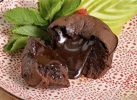
Datos curiosos sobre el Volcán de Chocolate:
- Al partirlo provocamos una erupción de chocolate derretido.
- El nombre elegido fue coulant, que deriva directamente de la característica lingüísticas del verbo »couler» que a su traducción significa fluido, derretido.
- Su interior se derrama porque se mantiene en estado líquido mientras su corteza es crocante.
- Su sabor puro ya que está hecho en base a chocolate amargo y para que sea de la mejor calidad
Ingredientes para prepar un volcán de chocolate:
- Chocolate amargo 150g.
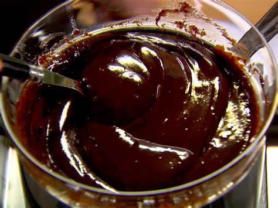
- Mantequilla sin sal 150g.
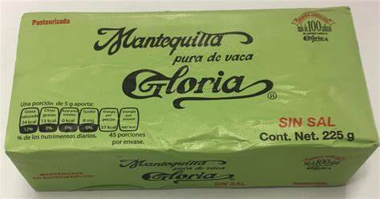
- De esencia de vainilla una cucharadita.
- Huevos 3.
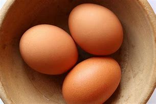
- Yemas 3.
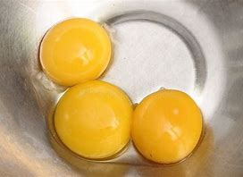
- Azúcar 1 ½ tazas.
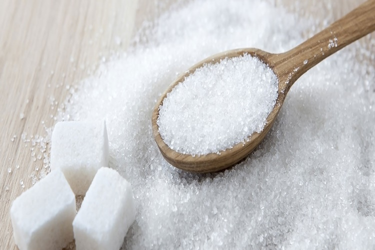
- Harina 1 ½ tazas.
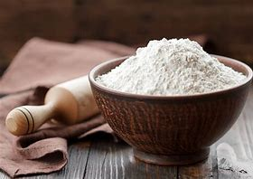
Preparación del volcçan de chocolate:
- Poner el chocolate en un bol junto con la mantequilla y empezar a derrertirlos a baño maria hasta lograr tener una masa homogénea, luego agregar la esencia de vainilla y dejar que se vaya entibiando.
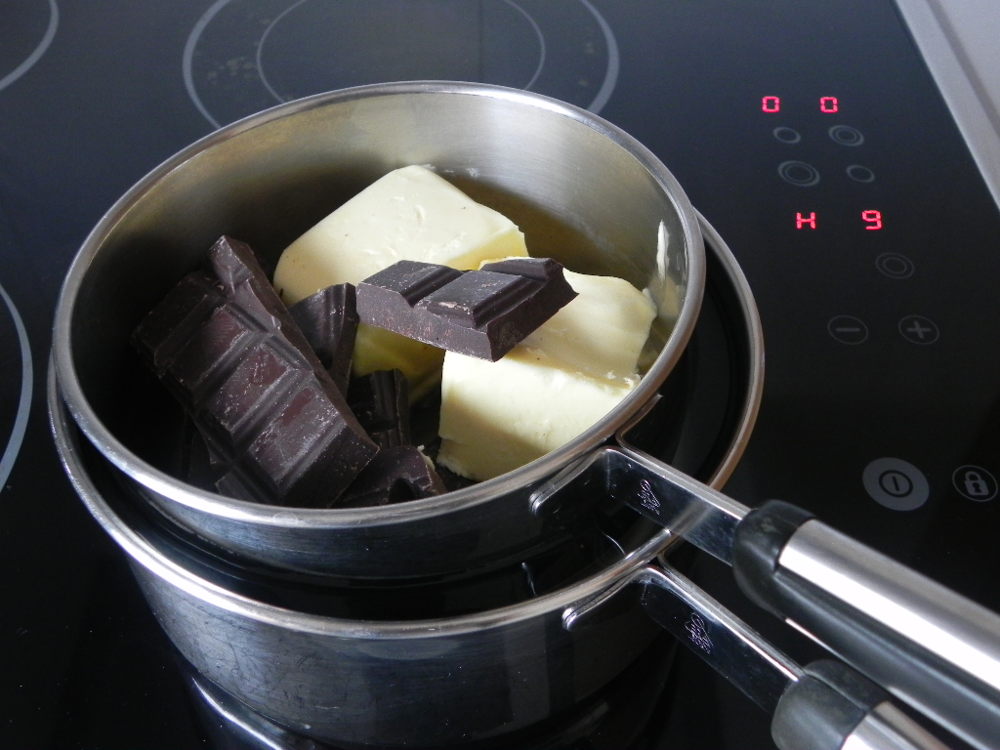
- En otro bol aparte empezar a batir los tres huevos junto con las tres yemas por 1 minuto, agregar los 150 gramas de azúcar poco a poco y unir bien todo.Agregar la mezcla de chocolate y luego la harina, emepezar a mezclar hasta que todo este unido y este una masa homogénea.
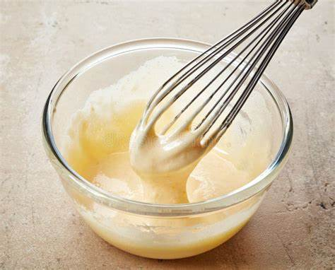
- Ir precalentando el horno a 200°C durante 12 a 14 minutos.
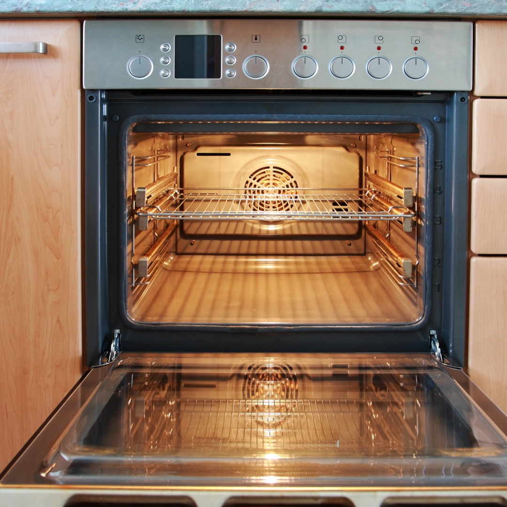
- Empezar a enmantequillar y harinar 6 moldes indivuales(con ¾ a 1 taza de capacidad).Verter la mezcla en los moldes. dejando 2 centímetros antes de llegar al borde sin contenido.
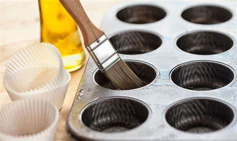
- Llevar al horno a 180°C por 8 minutos, sabremos que esta listo al ver que los bordes estan firmes y el centro semi liquido.
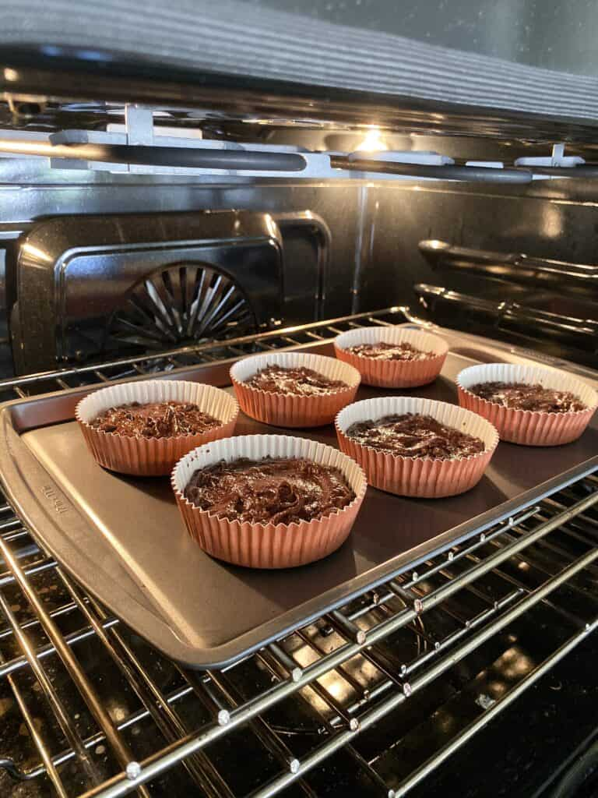
- Retirar y dejar enfriar, para luego desmoldarlo y comer
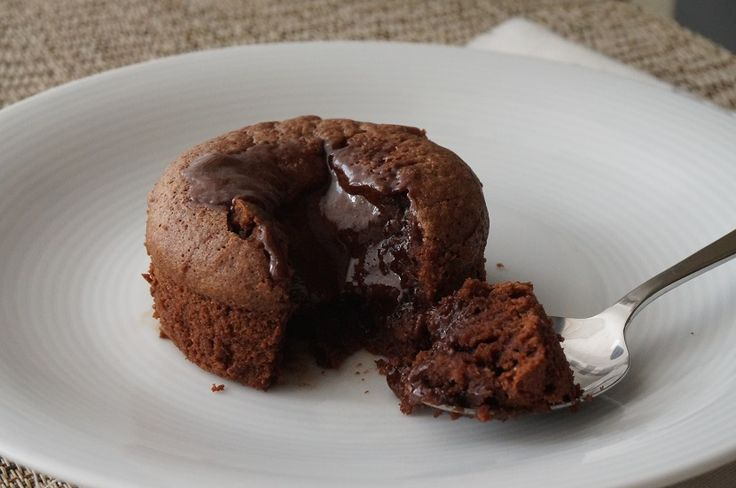